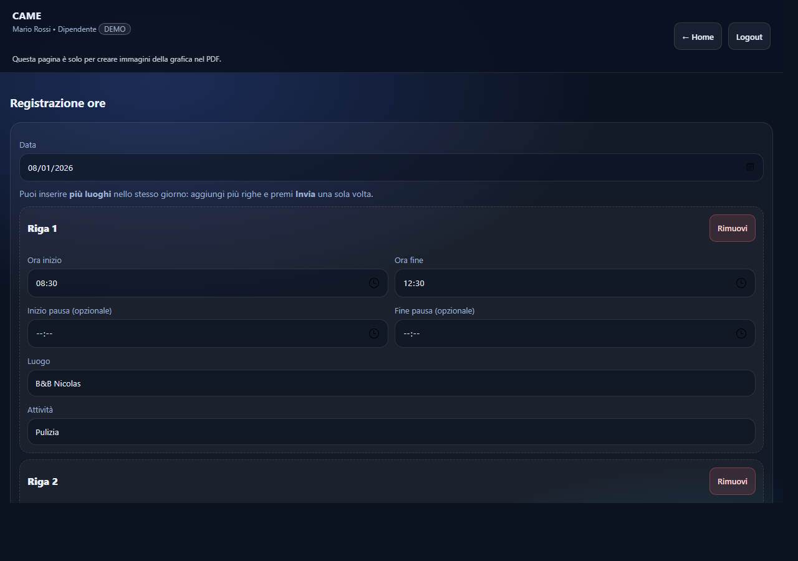
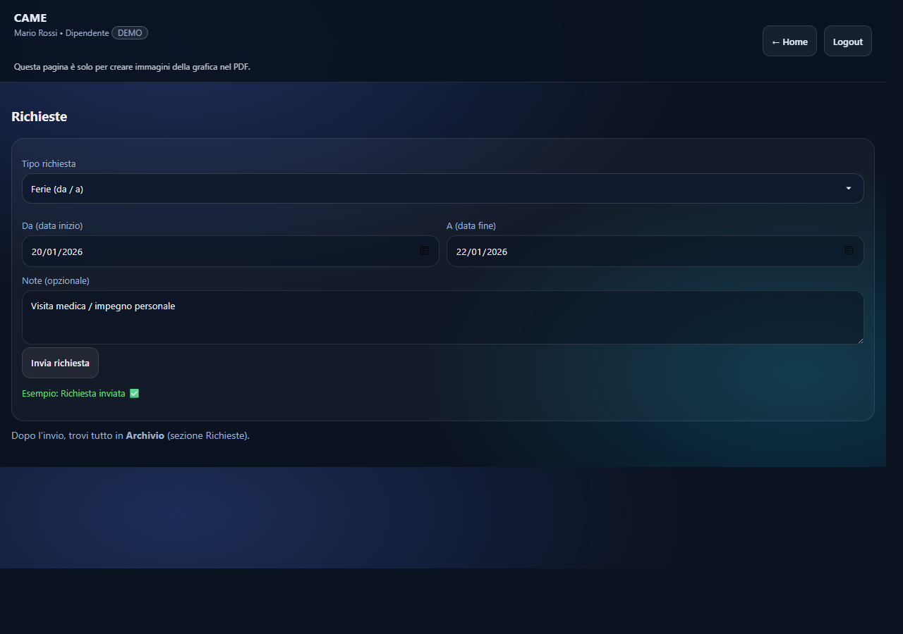
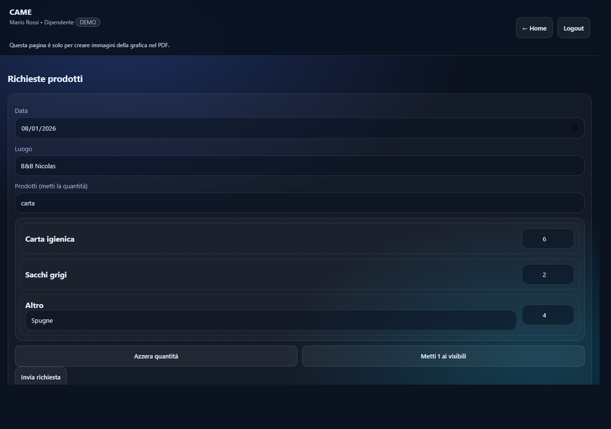
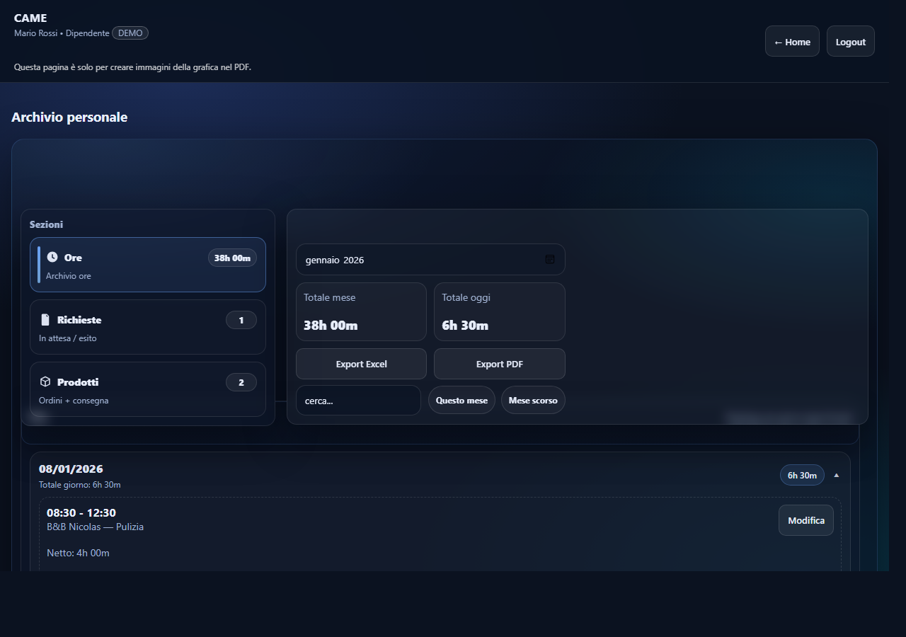

A) Compilazione (anche più righe nello stesso giorno)
Seleziona la Data.
Compila almeno una riga con:
Ora inizio e Ora fine
Luogo e Attività (puoi selezionare o scrivere liberamente)
Pausa (opzionale):
Se la inserisci, devi compilare sia inizio che fine pausa
La pausa deve essere dentro l’orario di lavoro
Se nello stesso giorno hai lavorato in più posti/attività:
premi + Aggiungi riga
compila le righe extra
Premi Invia una sola volta.
B) Pulsanti utili
+ Aggiungi riga: aggiunge una riga per lo stesso giorno.
Reset righe: azzera tutto e ricrea una riga vuota.
Errori comuni
Ora fine dopo ora inizio: controlla gli orari.
Pausa: compila entrambe (inizio e fine) oppure svuotale.
Riga “mezza compilata”: completa tutti i campi oppure rimuovi la riga.

Registrazione ore: puoi aggiungere più righe nello stesso giorno e inviare una sola volta.
4) Richieste – Ferie / Permessi
A) Tipi richiesta
Ferie (da / a): inserisci Da e A
Permesso giornaliero (data): inserisci Data
Permesso entrata anticipata (data + ora): inserisci Data e Ora
Permesso entrata posticipata (data + ora): inserisci Data e Ora
Le Note sono opzionali.
B) Invio
Seleziona il tipo
Compila date/ora richieste
Premi Invia richiesta
Dopo l’invio trovi tutto in Archivio → Richieste.
C) Modifica / Annulla richiesta (solo “Inviata / in attesa”)
Vai in Archivio → Richieste
Sezione Richieste in attesa:
Modifica: correggi data/ora/note
Annulla: elimina la richiesta (con conferma)
Nota
Le richieste Approvate o Rifiutate restano nello storico e non si modificano.

Richieste: scegli il tipo (ferie/permessi), compila data/ora e invia. Poi trovi tutto in Archivio.
5) Prodotti – Richieste prodotti
A) Compilazione
Seleziona Data
Inserisci Luogo
Metti la quantità sui prodotti (0 = non richiesto)
Se usi Altro: scrivi anche il nome del prodotto
Premi Invia richiesta
B) Strumenti veloci
Cerca prodotto: filtra la lista (es. “carta”, “sacchi”).
Azzera quantità: riporta tutto a 0.
Metti 1 ai visibili: mette 1 ai prodotti filtrati.
Dopo l’invio trovi tutto in Archivio → Prodotti.
C) Annulla ordine (solo se non consegnato)
In Archivio → Prodotti, apri l’ordine:
Se è Non consegnato, puoi usare Annulla ordine (annulla tutti i prodotti di quel luogo + data).

Prodotti: inserisci luogo e quantità (0 = non richiesto). Usa “Cerca prodotto”, “Azzera quantità” e “Metti 1 ai visibili”.
6) Archivio personale
A) Sezioni
In alto trovi 3 schede: OreRichiesteProdotti.
B) Filtri mese + ricerca
Mese: scegli il mese da consultare.
Totale mese e Totale oggi: riepiloghi rapidi.
Questo mese / Mese scorso: scorciatoie.
Cerca in archivio…: cerca per luogo, attività, note, ecc.
Su smartphone
Il blocco Filtri può essere “a scomparsa”. Nelle sezioni Richieste/Prodotti puoi usare 📅 Cambia mese per tornare ai filtri.
C) Archivio Ore: apri/chiudi e modifica
Ogni giorno è “apribile”: tocchi il giorno per vedere le righe.
Su ogni riga puoi usare Modifica per cambiare orari/pausa/luogo/attività.
D) Export (Ore)
Export Excel: scarica .xlsx con dettaglio + riepilogo.
Export PDF: scarica un PDF con dettaglio + riepilogo giornaliero.
Se l’export non parte
Serve connessione Internet (le librerie di export vengono caricate online).
Su smartphone è meglio aprire l’app da un indirizzo http (non da “file”).

Archivio: scegli la sezione (Ore/Richieste/Prodotti), filtra per mese, cerca e usa Export Excel/PDF.
7) Logout
Premi Logout (in alto a destra).
FAQ veloce
“Sessione scaduta. Rifai login.” Rientra da login.html.
Non vedo suggerimenti Luogo/Attività su telefono Puoi scrivere liberamente: i suggerimenti compaiono come elenco quando tocchi il campo.
Ho lasciato una riga vuota in Ore Se la riga è completamente vuota viene ignorata; se è “mezza compilata”, il sistema chiede di completarla o rimuoverla.